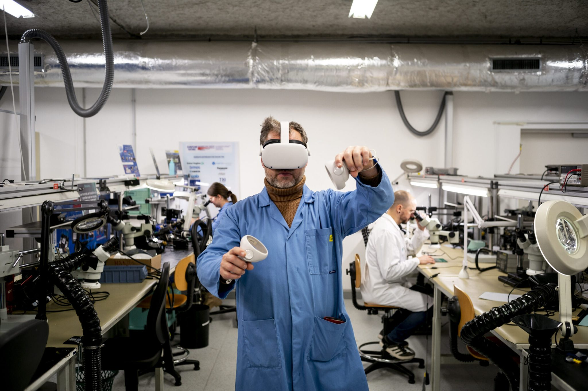
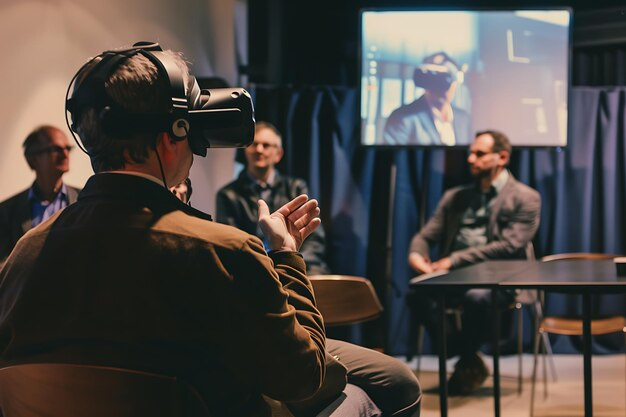
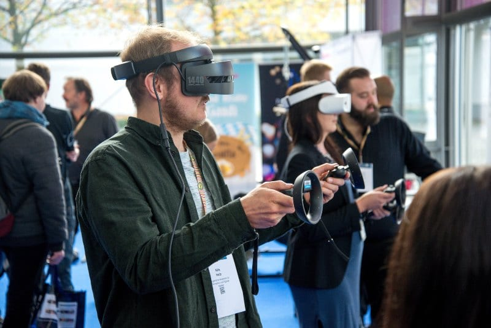

Fait marquant
La VR passe d’un usage surtout grand public à des cas d’usage professionnels mieux structurés : formation, simulation, collaboration et support opérationnel.
Impact
Les entreprises investissent davantage car les résultats sont mesurables (réduction des coûts de formation, gain de sécurité, meilleure reproductibilité des scénarios).
Ce que je retiens
Cette tendance confirme que la VR devient un domaine stratégique à maîtriser pour un profil informatique orienté développement applicatif et innovation.


